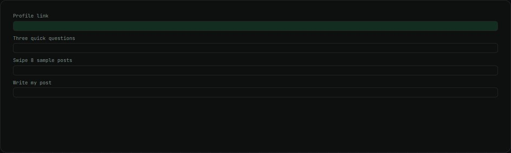
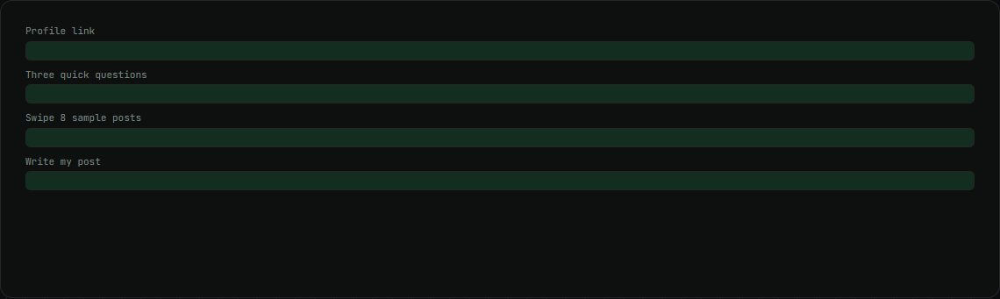

Social Catalyst app
Soch's LinkedIn content studio, turned into a self-serve product anyone can sign up for.
my role Led the switch to a self-serve product: 135 of 143 commits since it began.
The problem
Content Studio was built for Soch's own team, behind one shared password and with Google Sheets as its database. To offer it to individuals, it needed accounts, private workspaces, safe long-running jobs and a way to charge.
How it works
- A person signs up, confirms their email and gets their own workspace.
- Before paying, they get a free About audit: a score out of 10 on seven checks and the top three fixes.
- They can swipe through sample posts and, after eight swipes, get one free post with a designed image.
- Paid work runs the same pipeline Soch's team uses, paid for in credits.
- Soch's team keeps working in the same app, with its own agency-only screens.
What changed
- 11migration phases, all merged
- 7checks in the free audit
- 135 of 143commits since the switch
What I built
- Moved the data from Google Sheets to Supabase Postgres behind a repository layer, with row-level security as a backstop.
- Accounts, members and workspaces, with every route checking access.
- A job queue in a second service, where a step that already spent money is never run again.
- A credit ledger with holds and per-run spending fuses, plus structured logs, error tracking and an audit trail.
Stack
- Next.js
- TypeScript
- Supabase
- PostgreSQL
- Drizzle
- graphile-worker
- Claude API
- Sentry
- Railway
Stills

